You know how to make ggplot2 graphics, right? No worries. Piece of cake.
Now, can you please rotate the x axis labels to vertical?


ggeasy is here to make that a little easier.
Reference
See the pkgdown site.
Examples
library(ggplot2)
library(ggeasy)
# rotate x axis labels
ggplot(mtcars, aes(hp, mpg)) +
geom_point() +
easy_rotate_x_labels()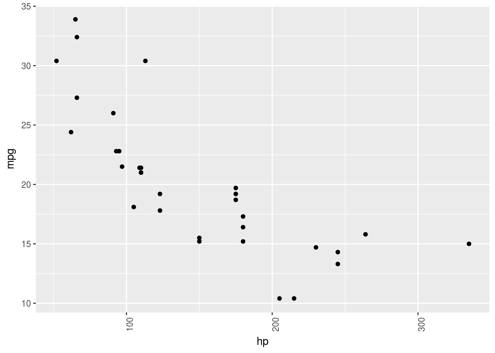
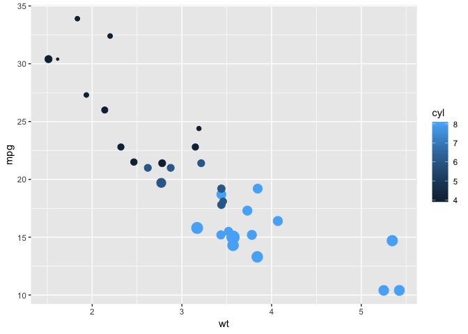
# remove 'size' legend
ggplot(mtcars, aes(wt, mpg, colour = cyl, size = hp)) +
geom_point() +
easy_remove_legend(size)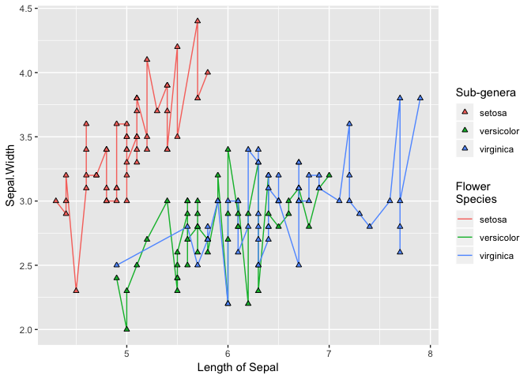
# make the x axis labels larger
ggplot(mtcars, aes(mpg, hp)) +
geom_point() +
easy_x_axis_labels_size(22)
# make all the text red
ggplot(mtcars, aes(mpg, hp)) +
geom_point(aes(fill = gear)) +
easy_all_text_color("red")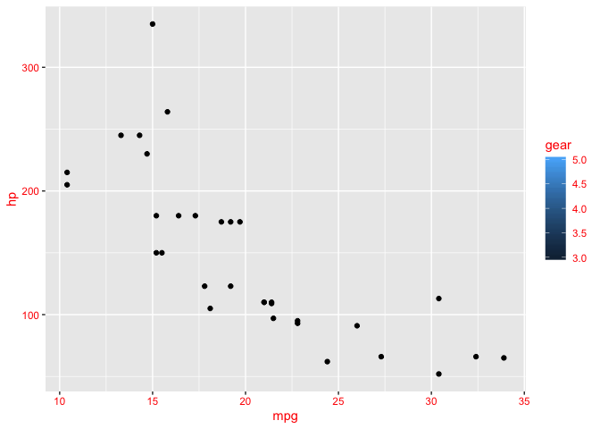
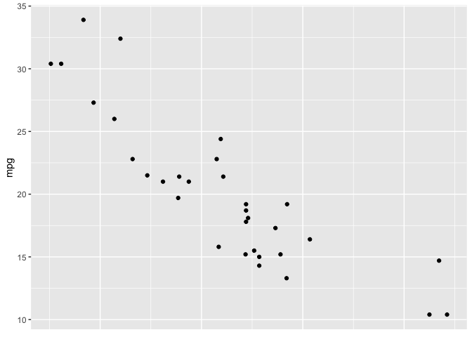
# remove y axis ticks
ggplot(mtcars, aes(wt, mpg)) +
geom_point() +
easy_remove_y_axis(what = "ticks")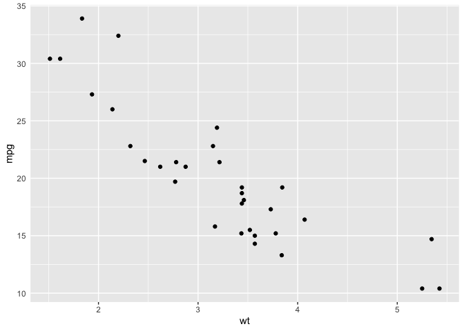
# move legends to bottom
ggplot(mtcars, aes(wt, mpg, colour = cyl, size = hp)) +
geom_point() +
easy_move_legend("bottom")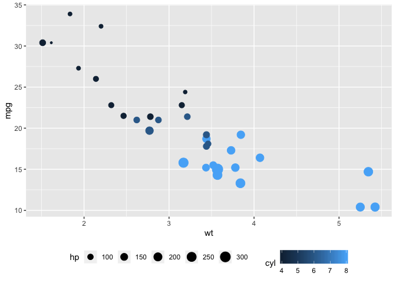
# move legend to left side
ggplot(mtcars, aes(wt, mpg, colour = cyl, size = hp)) +
geom_point() +
easy_legend_at("left")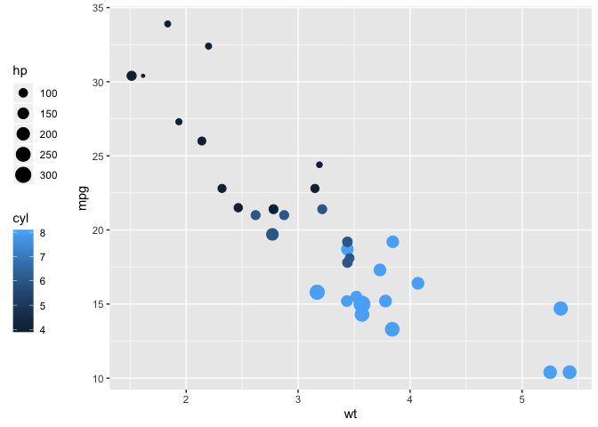
# Make legends horizontal
ggplot(mtcars, aes(wt, mpg, colour = cyl, size = hp)) +
geom_point() + easy_rotate_legend("horizontal")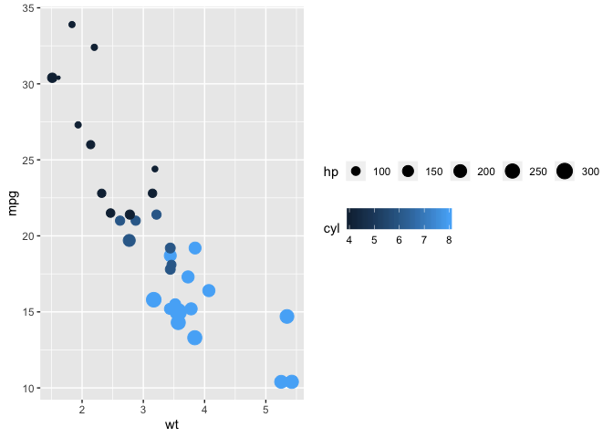
# use labelled variables
iris_labs <- iris
labelled::var_label(iris_labs$Species) <- "Flower\nSpecies"
labelled::var_label(iris_labs$Sepal.Length) <- "Length of Sepal"
iris_labs_2 <- iris_labs
labelled::var_label(iris_labs_2$Species) <- "Sub-genera"
# use variable labels automatically
ggplot(iris_labs, aes(x = Sepal.Length, y = Sepal.Width)) +
geom_line(aes(colour = Species)) +
geom_point(data = iris_labs_2, aes(fill = Species), shape = 24) +
easy_labs()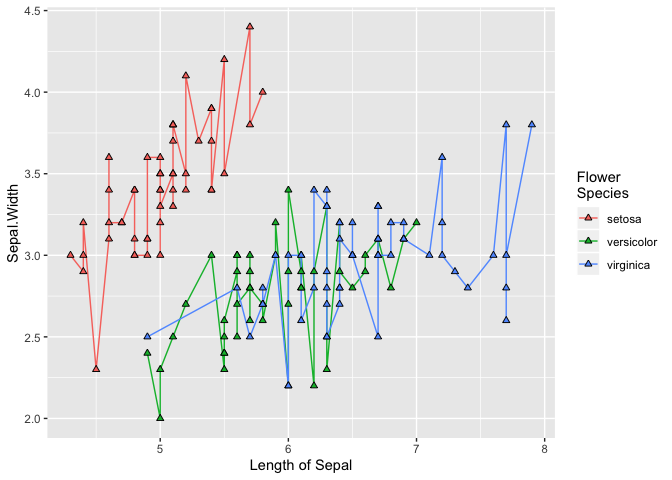
These functions will try to teach you the ‘official’ way to achieve these goal, usually via the teach argument (where implemented)
ggplot(mtcars, aes(hp, mpg)) +
geom_point() +
easy_rotate_y_labels(angle = "startatbottom", teach = TRUE)
#> easy_rotate_y_labels call can be substituted with:
#> theme(axis.text.y = element_text(angle = 90, hjust = 0))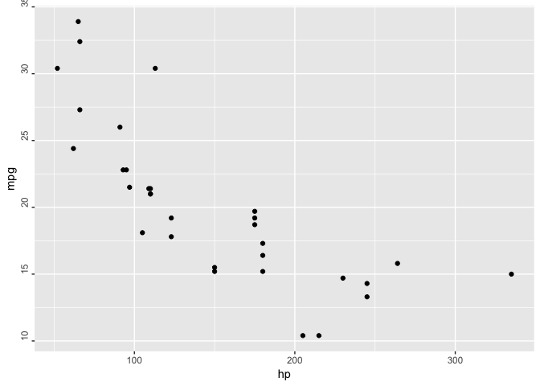